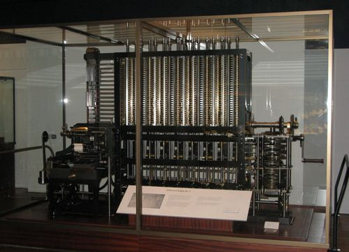

Το αναγνωστήριο
Η τεχνολογία μέσα στην καθημερινότητα.
Η θεωρία της πτυχιακής εργασίας σε μια συνεχόμενη, αναγνώσιμη διαδρομή. Διάλεξε ένα κεφάλαιο ή ξεκίνα από την αρχή.
Το εκπαιδευτικό περιεχόμενο προέρχεται από το πρωτότυπο του 2023. Οι χρονικές αναφορές και το σενάριο του μέλλοντος εκφράζουν το πλαίσιο εκείνης της εργασίας.
Ιστορία των υπολογιστών

Προτού συνεχίσουμε, ας δούμε πώς φτάσαμε ως εδώ...
Οι Απαρχές
Πολύ πριν από τους ηλεκτρονικούς υπολογιστές, οι άνθρωποι χρησιμοποιούσαν εργαλεία όπως ο άβακας για την καταμέτρηση και την εκτέλεση πράξεων.
Οι αστρολάβοι μπορούν να θεωρηθούν ως οι πρώτοι αναλογικοί υπολογιστές. Χρησιμοποιήθηκαν για την παρατήρηση των αστέρων και τον προσδιορισμό του ύψους τους από τον ορίζοντα.
Ο Μηχανισμός των Αντικυθήρων είναι ένα διαφορετικό παράδειγμα αρχαίας υπολογιστικής μηχανής: ένας οδοντωτός μηχανισμός για αστρονομικούς υπολογισμούς. Το Εθνικό Αρχαιολογικό Μουσείο τον χρονολογεί περίπου στο 150–100 π.Χ. Περισσότερα από το μουσείο.
Οι λογάριθμοι εισήχθησαν για πρώτη φορά από τον Σκωτσέζο μαθηματικό John Napier το 1614. Ο στόχος του Napier ήταν να δημιουργήσει ένα σύστημα αριθμών που θα απλοποιούσε πολύπλοκους μαθηματικούς υπολογισμούς, ιδιαίτερα αυτούς που περιλαμβάνουν πολλαπλασιασμό και διαίρεση.
Στις αρχές της δεκαετίας του 1820, ο Charles Babbage ξεκίνησε τη Μηχανή Διαφοράς για τον υπολογισμό αριθμητικών πινάκων. Η μέθοδος των πεπερασμένων διαφορών επέτρεπε τον υπολογισμό πολυωνύμων χρησιμοποιώντας επαναλαμβανόμενες προσθέσεις. Η μεταγενέστερη Αναλυτική Μηχανή ήταν διαφορετικό, προγραμματιζόμενο σχέδιο γενικού σκοπού. Τα σχέδια του Babbage στο Computer History Museum.
Η Ada Lovelace ήταν μια Αγγλίδα μαθηματικός και συγγραφέας που θεωρείται ευρέως ως η πρώτη προγραμματίστρια υπολογιστών στον κόσμο. Στα μέσα του 1800, συνεργάστηκε με τον Charles Babbage, τον εφευρέτη της Μηχανής Διαφοράς και της Αναλυτικής Μηχανής.
Μία από τις πιο σημαντικές συνεισφορές της Lovelace στην ανάπτυξη των υπολογιστών ήταν η αναγνώρισή της ότι η Αναλυτική Μηχανή θα μπορούσε να χρησιμοποιηθεί για την εκτέλεση εργασιών πέρα από απλούς μαθηματικούς υπολογισμούς. Οραματίστηκε ένα μέλλον στο οποίο μηχανές θα μπορούσαν να χρησιμοποιηθούν για τη δημιουργία νέων έργων τέχνης, τη δημιουργία μουσικής και ακόμη και τη δημιουργία νέων μορφών λογοτεχνίας.
Ο Υπολογιστής Atanasoff-Berry, ή ABC, αναπτύχθηκε στα τέλη της δεκαετίας του 1930 και στις αρχές της δεκαετίας του 1940 από τον John Atanasoff, καθηγητή φυσικής και μαθηματικών, και τον μεταπτυχιακό φοιτητή του, Clifford Berry, στο Iowa State College. Το μηχάνημα χρησιμοποίησε δυαδικά ψηφία και ηλεκτρονικούς διακόπτες για να εκτελέσει υπολογισμούς, καθιστώντας το ένα από τα πρώτα παραδείγματα ηλεκτρονικού ψηφιακού υπολογιστή.
Αυτές είναι μόνο μερικές από τις βασικές εφευρέσεις που άνοιξαν το δρόμο για τους σύγχρονους υπολογιστές όπως τους γνωρίζουμε σήμερα.
Με τα χρόνια, υπήρξαν πολλές διαφορετικές γενιές υπολογιστών , καθεμία από τις οποίες χαρακτηρίζεται από σημαντικές τεχνολογικές εξελίξεις και καινοτομίες.
Γενιές Υπολογιστών
1η Γενιά (1940s - 1950s)
Οι υπολογιστές της πρώτης γενιάς χρησιμοποιούσαν σωλήνες κενού για κυκλώματα και μαγνητικά τύμπανα για αποθήκευση δεδομένων. Παραδείγματα υπολογιστών πρώτης γενιάς περιλαμβάνουν τον ENIAC και τον UNIVAC.
Eίχαν μεγάλη κατανάλωση ηλεκτρικής ενέργειας, παρήγαγαν πολύ θερμότητα
Kαταλάμβαναν πλήρεις χώρους και είχαν πολύ χαμηλή αξιοπιστία
Χρησιμοποιήθηκαν για επιστημονικές και στρατιωτικές εφαρμογές σε μυστικά εργαστήρια
Ήταν απαγορευτικά ακριβοί και απρόσιτοι για τους απλούς ανθρώπους
2η Γενιά (1950s - 1960s)
Η δεύτερη γενιά υπολογιστών χρησιμοποιούσε τρανζίστορ aντί για σωλήνες κενού, γεγονός που τους έκανε μικρότερους, ταχύτερους και πιο αξιόπιστους. Η μνήμη μαγνητικού πυρήνα εισήχθη επίσης σε αυτή τη γενιά. Παραδείγματα υπολογιστών δεύτερης γενιάς περιλαμβάνουν τον IBM 1401 και τον DEC PDP-8.
μείωση της κατανάλωσης ενέργειας, του όγκου (μεγέθους) και του κόστους και
αύξηση της ταχύτητάς.
3η Γενιά (1960s - 1970s)
Η τρίτη γενιά υπολογιστών χρησιμοποιούσε ολοκληρωμένα κυκλώματα , τα οποία επέτρεψαν ακόμη μεγαλύτερη ταχύτητα, αξιοπιστία και μείωση στο μέγεθος. Αυτοί οι υπολογιστές είχαν επίσης τη δυνατότητα πολλαπλής επεξεργασίας και χρονομερισμού. Παραδείγματα υπολογιστών τρίτης γενιάς περιλαμβάνουν το IBM System/360 και το DEC PDP-11.
Για πρώτη φορά έχουμε οικογένειες υπολογιστών (δηλ. υπολογιστές με παρόμοια λειτουργία, που μπορούν να εκτελούν το ίδιο σύνολο εντολών)
4η Γενιά (1970s - παρόν)
Η τέταρτη γενιά υπολογιστών είδε την εισαγωγή μικροεπεξεργαστών , οι οποίοι επέτρεψαν την ανάπτυξη προσωπικών υπολογιστών και άλλων μικρών, προσιτών υπολογιστικών συσκευών. Σε αυτή τη γενιά εισήχθησαν επίσης γραφικές διεπαφές χρήστη και δυνατότητες δικτύωσης.
Το 1981 η IBM παρουσίασε τον IBM Personal Computer (μοντέλο 5150), ένα σημαντικό ορόσημο στην ιστορία των προσωπικών υπολογιστών. Δεν ήταν ο πρώτος προσωπικός υπολογιστής. Η ιστορία του IBM PC.
Νέες υπολογιστικές κατευθύνσεις
Η εκπαιδευτική αφήγηση του 2023 ομαδοποιούσε υπό τον όρο «πέμπτη γενιά» τεχνολογίες όπως η τεχνητή νοημοσύνη και νέες υπολογιστικές αρχιτεκτονικές. Αυτή είναι μια απλουστευτική ταξινόμηση για τη μάθηση, όχι μια ενιαία τεχνική γενιά ή χρονολογική πρόβλεψη.
Εποχές - Κύματα
Εποχή του Mainframe
Πολλοί χρήστες, ένας υπολογιστής
Εποχή του PC
Ένας χρήστης, ένας υπολογιστής
Εποχή του Διάχυτου Yπολογισμού
Ένας χρήστης, πολλοί υπολογιστές
Η ιδέα και οι αρχές
Εποχή του Διάχυτου Yπολογισμού
Ένας χρήστης, πολλοί υπολογιστές
Ένα τεράστιο δίκτυο διασυνδεδεμένων συσκευών ενσωματώνεται στη ζωή μας.
Ο πανταχού παρών υπολογισμός, γνωστός και ως διάχυτος υπολογισμός και συνδεόμενος με το Internet of Things (IoT), βρίσκεται στο επίκεντρο αυτού του μετασχηματισμού, αναδιαμορφώνοντας τον τρόπο αλληλεπίδρασης με την τεχνολογία και φέρνοντας επανάσταση στις καθημερινές μας εμπειρίες.
Mark Weiser
Ο Mark Weiser ήταν ένας οραματιστής επιστήμονας υπολογιστών που θεωρείται ευρέως ως ο εφευρέτης της διάχυτης υπολογιστικής.
Στο άρθρο «The Computer for the 21st Century» (1991), ο Mark Weiser παρουσίασε το όραμα της διάχυτης υπολογιστικής μέσα από την έρευνά του στο Xerox PARC.
Οραματίστηκε έναν κόσμο όπου οι υπολογιστές θα ενσωματώνονταν απρόσκοπτα στην καθημερινότητά μας, λειτουργώντας αρμονικά και αόρατα, εμπλουτίζοντας τις ανθρώπινες εμπειρίες.
Machines that fit the human environment, instead of forcing humans to enter theirs, will
make using a computer as refreshing as taking a walk in the woods.Mark Weiser
Ubiquitous computing names the third wave in computing. First were mainframes, each
shared by lots of people. Now we are in the personal computing era, person and machine
staring uneasily at each other across the desktop. Next comes ubiquitous computing, or
the age of calm technology, when technology recedes into the background of our
lives.Mark Weiser
Η διάχυτη υπολογιστική, ως έννοια της επιστήμης των υπολογιστών και της αλληλεπίδρασης ανθρώπου-υπολογιστή, βασίζεται στη απρόσκοπτη ενσωμάτωση της τεχνολογίας στα καθημερινά περιβάλλοντα και δραστηριότητές μας.
Η ιδέα πίσω από την πανταχού παρούσα υπολογιστική είναι η δημιουργία ενός υπολογιστικού περιβάλλοντος τόσο διάχυτου και διακριτικού που γίνεται αόρατο, ενισχύοντας τις εμπειρίες μας χωρίς να απαιτείται άμεση παρέμβαση του χρήστη.
Αρχές Σχεδιασμού
Απλότητα
Μία από τις θεμελιώδεις αρχές της διάχυτης υπολογιστικής είναι η απλότητα. Ο σχεδιασμός θα πρέπει να επιδιώκει την απλότητα στις αλληλεπιδράσεις, τις διεπαφές και τη συνολική εμπειρία χρήστη.
Ο στόχος είναι η τεχνολογία να συνδυάζεται απρόσκοπτα με το περιβάλλον και την καθημερινή ζωή του χρήστη, χωρίς να τον συντρίβει ή να τον μπερδεύει με πολύπλοκες διεπαφές ή αλληλεπιδράσεις.
Επίγνωση πλαισίου
Τα πανταχού παρόντα υπολογιστικά συστήματα έχουν σχεδιαστεί για να έχουν επίγνωση του περιβάλλοντος, που σημαίνει ότι μπορούν να αντιληφθούν και να ανταποκριθούν στο περιβάλλον και την κατάσταση του χρήστη. Με την ανίχνευση και την κατανόηση πληροφοριών, όπως η τοποθεσία, η ώρα και οι προτιμήσεις των χρηστών, αυτά τα συστήματα μπορούν να προσαρμόσουν και να παρέχουν σχετικές πληροφορίες και υπηρεσίες.
Ικανότητα προσαρμογής
Τα πανταχού παρόντα υπολογιστικά συστήματα θα πρέπει να προσαρμόζονται στις αλλαγές στις ανάγκες, τις προτιμήσεις και τα περιβάλλοντα του χρήστη. Θα πρέπει να είναι αρκετά ευέλικτα ώστε να ικανοποιούν τις διαφορετικές απαιτήσεις των χρηστών και να μπορούν να προσαρμόζονται σε δυναμικές καταστάσεις.
Διαφάνεια
Η πανταχού παρούσα πληροφορική στοχεύει να κάνει την τεχνολογία να ξεθωριάζει στο παρασκήνιο και να γίνει ένα αόρατο μέρος της ζωής μας. Αυτή η αρχή της διαφάνειας υποδηλώνει ότι η τεχνολογία δεν πρέπει να είναι παρεμβατική και να λειτουργεί απρόσκοπτα χωρίς να εφιστά την προσοχή στον εαυτό της.
Αξιοπιστία
Θα πρέπει επισης να είναι ανθεκτικά και αξιόπιστα, ικανά να αντέχουν σε διάφορες περιβαλλοντικές συνθήκες, αστοχίες υλικού και διακοπές δικτύου. Θα πρέπει να υπάρχουν μηχανισμοί ανοχής σφαλμάτων και χειρισμού σφαλμάτων ώστε να διασφαλίζεται η σταθερότητα του συστήματος και να αποφεύγεται η απώλεια ή η καταστροφή δεδομένων.
Προστασία ιδιωτικότητας
Το απόρρητο και η ασφάλεια είναι κρίσιμα ζητήματα στον διάχυτο υπολογισμό. Οι αρχές σχεδιασμού από αυτή την άποψη πρέπει να δίνουν έμφαση στον έλεγχο και τη συναίνεση των χρηστών στα προσωπικά δεδομένα , στην εξασφάλιση ασφαλούς επικοινωνίας και αποθήκευσης και στην εφαρμογή μηχανισμών για την προστασία του απορρήτου.
Επεκτασιμότητα
Τέλος τα συστήματα αυτά θα πρέπει να σχεδιάζονται ώστε να είναι επεκτάσιμα, επιτρέποντάς τα να φιλοξενούν διάφορες συσκευές, τεχνολογίες και περιβάλλοντα. Θα πρέπει να μπορούν να συνδέονται απρόσκοπτα με νέες συσκευές ή τεχνολογίες καθώς αυτές εμφανίζονται, διασφαλίζοντας τη συμβατότητα και τη διαλειτουργικότητα.
Τα τρία κύματα της διάχυτης υπολογιστικής
Η πτυχιακή οργανώνει την αφήγηση σε τρία στάδια: τεχνολογικά θεμέλια, συνδεδεμένες εφαρμογές και ένα υποθετικό μέλλον. Πρόκειται για το σχήμα παρουσίασης της εργασίας, διαφορετικό από τις τρεις γενικές εποχές υπολογισμού του προηγούμενου κεφαλαίου.
Πρώτο κύμα: τα θεμέλια
Φορητές συσκευές, ασύρματα δίκτυα, RFID, cloud computing, αισθητήρες, υπολογιστική όραση, υπηρεσίες τοποθεσίας και επεξεργασία φυσικής γλώσσας. Τα επόμενα οκτώ κεφάλαια εξηγούν αυτά τα συστατικά.
Δεύτερο κύμα: συνδεδεμένα περιβάλλοντα
Οι τεχνολογίες συνδυάζονται σε εφαρμογές όπως το έξυπνο σπίτι, το αυτοκίνητο και τα φορετά συστήματα. Το ενδιαφέρον μετακινείται από τη μεμονωμένη συσκευή στην ανθρώπινη δραστηριότητα.
Τρίτο κύμα: ένα πιθανό μέλλον
Το τελευταίο σενάριο της εργασίας φαντάζεται μια καθημερινότητα με διάχυτη νοημοσύνη. Δεν είναι περιγραφή υπαρκτού προϊόντος ούτε πρόβλεψη ότι όλες αυτές οι δυνατότητες θα πραγματοποιηθούν.
Φορητές συσκευές
Αυτές οι συσκευές, συμπεριλαμβανομένων των smartphone και των tablet, έχουν φέρει επανάσταση στον τρόπο αλληλεπίδρασης με την τεχνολογία, επιτρέποντάς μας να έχουμε ισχυρές υπολογιστικές δυνατότητες στις τσέπες μας.
Smartphones
Ευέλικτες συσκευές που συνδυάζουν επικοινωνία, πρόσβαση στο Διαδίκτυο, εφαρμογές και πολλά άλλα σε ένα πακέτο μεγέθους τσέπης.
Tablets
Μεγαλύτερες από τα smartphone, αυτές οι συσκευές προσφέρουν μεγαλύτερη οθόνη για εργασίες όπως η περιήγηση, η ανάγνωση και η ελαφριά παραγωγικότητα.
Wearable συσκευές
Συμπεριλαμβανομένων των smartwatches και των trackers fitness, αυτές οι συσκευές προσφέρουν παρακολούθηση της υγείας, ειδοποιήσεις και γρήγορη πρόσβαση σε εφαρμογές.
Laptops
Φορητοί υπολογιστές για πιο σύνθετες εργασίες, με ορισμένα μοντέλα να μετατρέπονται σε tablet για ευελιξία.
E-Readers
Ειδικές συσκευές για την ανάγνωση ψηφιακών βιβλίων και εγγράφων, που παρέχουν εστιασμένη εμπειρία ανάγνωσης.
Ασύρματη επικοινωνία
Μερικές βασικές τεχνολογίες ασύρματης επικοινωνίας:
Wi-Fi Το Wi-Fi επιτρέπει στις συσκευές να συνδέονται ασύρματα σε τοπικά δίκτυα (LAN). Παρέχει μεταφορά δεδομένων υψηλής ταχύτητας και χρησιμοποιείται συνήθως σε σπίτια, γραφεία, δημόσιους χώρους και ιδρύματα για να επιτρέψει τη σύνδεση στο Διαδίκτυο και τη διασύνδεση συσκευών.
Bluetooth Το Bluetooth είναι μια τεχνολογία ασύρματης επικοινωνίας μικρής εμβέλειας που διευκολύνει τη μετάδοση δεδομένων μεταξύ συσκευών σε κοντινή απόσταση. Χρησιμοποιείται συνήθως για ασύρματη ροή ήχου, σύνδεση περιφερειακών συσκευών όπως πληκτρολόγια και ποντίκια με υπολογιστές και διασύνδεση έξυπνων συσκευών στο οικοσύστημα Internet of Things (IoT).
Zigbee Το Zigbee είναι ένα πρωτόκολλο ασύρματης επικοινωνίας χαμηλής κατανάλωσης που έχει σχεδιαστεί για εφαρμογές που απαιτούν χαμηλούς ρυθμούς δεδομένων και εκτεταμένη διάρκεια ζωής της μπαταρίας. Χρησιμοποιείται συνήθως στον οικιακό αυτοματισμό, την έξυπνη διαχείριση ενέργειας και τα βιομηχανικά συστήματα ελέγχου, επιτρέποντας στις συσκευές να επικοινωνούν ασύρματα σε ένα δίκτυο πλέγματος.
Δίκτυα κινητής τηλεφωνίας Τα δίκτυα κινητής τηλεφωνίας, όπως τα 2G, 3G, 4G και 5G, παρέχουν κάλυψη ασύρματης επικοινωνίας ευρείας περιοχής. Αυτά τα δίκτυα επιτρέπουν στις κινητές συσκευές να συνδέονται στο διαδίκτυο και να επικοινωνούν μεταξύ τους, υποστηρίζοντας φωνητικές κλήσεις, μηνύματα, δεδομένα κινητής τηλεφωνίας και πρόσβαση στο Διαδίκτυο.
Επικοινωνία κοντινού πεδίου (NFC) Το NFC είναι μια τεχνολογία ασύρματης επικοινωνίας μικρής εμβέλειας που επιτρέπει την ανέπαφη επικοινωνία μεταξύ συσκευών. Συχνά χρησιμοποιείται για πληρωμές μέσω κινητού τηλεφώνου, συστήματα έκδοσης εισιτηρίων, έλεγχο πρόσβασης και μεταφορά δεδομένων μεταξύ συσκευών σε κοντινή απόσταση.
Στο πλαίσιο της διάχυτης υπολογιστικής, οι τεχνολογίες ασύρματης επικοινωνίας επιτρέπουν στις συσκευές να διασυνδέονται , σχηματίζοντας δίκτυα που επιτρέπουν την ανταλλαγή δεδομένων και τη συνεργασία . Αυτές οι τεχνολογίες υποστηρίζουν τη μετάδοση διαφόρων τύπων δεδομένων, συμπεριλαμβανομένων κειμένου, φωνής, εικόνων, βίντεο και δεδομένων αισθητήρων, επιτρέποντας την επικοινωνία σε πραγματικό χρόνο, την απομακρυσμένη πρόσβαση και τη συνεργασία μεταξύ συσκευών και χρηστών.
Με τις εξελίξεις στις τεχνολογίες ασύρματων επικοινωνιών, η πανταχού παρούσα πληροφορική έχει γίνει πιο διάχυτη και διασυνδεδεμένη . Επιτρέπει την απρόσκοπτη ενοποίηση συσκευών, υπηρεσιών και εφαρμογών, οδηγώντας σε βελτιωμένη παραγωγικότητα, ευκολία και συνδεσιμότητα σε διάφορους τομείς, συμπεριλαμβανομένων των έξυπνων κατοικιών, της υγειονομικής περίθαλψης, των μεταφορών, της ψυχαγωγίας και άλλων.
RFID
Το RFID, που σημαίνει Αναγνώριση ραδιοσυχνοτήτων, είναι μια τεχνολογία που χρησιμοποιεί ραδιοκύματα για τον εντοπισμό και την παρακολούθηση αντικειμένων που είναι εξοπλισμένα με ετικέτες RFID.
Τα συστήματα RFID αποτελούνται από τρία κύρια στοιχεία: ετικέτες RFID, αναγνώστες RFID και ένα σύστημα υποστήριξης για την επεξεργασία δεδομένων.
Οι ετικέτες RFID είναι μικρές ηλεκτρονικές συσκευές που περιέχουν ένα μοναδικό αναγνωριστικό και μπορούν να αποθηκεύσουν πρόσθετες πληροφορίες. Mπορούν να προσαρτηθούν ή να ενσωματωθούν σε αντικείμενα, προϊόντα ή ακόμα και ζωντανά όντα.
Οι αναγνώστες RFID εκπέμπουν ραδιοκύματα και λαμβάνουν σήματα από ετικέτες μέσα στην εμβέλειά τους. Οι παθητικές ετικέτες αντλούν ενέργεια από το πεδίο του αναγνώστη και απαντούν με τα αναγνωριστικά δεδομένα τους. Οι ενεργές ετικέτες διαθέτουν δική τους πηγή ενέργειας.
Το σύστημα υποστήριξης περιλαμβάνει την υποδομή και το λογισμικό που είναι υπεύθυνο για τη διαχείριση δεδομένων RFID. Δηλαδή τις βάσεις δεδομένων, ενδιάμεσο λογισμικό και λογισμικό εφαρμογών που επεξεργάζονται τα δεδομένα που συλλέγονται, τα συσχετίζουν με πληροφορίες και επιτρέπουν στις εφαρμογές να αξιοποιήσουν τις πληροφορίες που είναι αποθηκευμένες στις ετικέτες.
Η τεχνολογία RFID προσφέρει πλεονεκτήματα όπως αυτοματισμό, ορατότητα σε πραγματικό χρόνο, βελτιωμένη ακρίβεια και αυξημένη απόδοση σε διάφορες εφαρμογές. Η υιοθέτησή της ήταν καθοριστική για την απρόσκοπτη αναγνώριση, παρακολούθηση και διαχείριση δεδομένων σε όλους τους κλάδους.
Cloud computing
Φανταστείτε ότι έχετε έναν ισχυρό υπολογιστή που μπορεί να κάνει πολλές εργασίες. Τώρα, σκεφτείτε να μοιραστείτε τις ικανότητες αυτού του υπολογιστή με πολλά άτομα μέσω του Διαδικτύου. Το cloud computing είναι σαν αυτή την ιδέα κοινής χρήσης. Αντί να έχει ο καθένας τον δικό του υπερυπολογιστή, μπορεί να χρησιμοποιήσει μέρη ενός μεγάλου υπερυπολογιστή που είναι αποθηκευμένος κάπου αλλού.
Η σημασία του Cloud Computing στον πανταχού παρόντα υπολογισμό:
Αποθήκευση Δεδομένων (Data Storage)
Η αποθήκευση στο cloud επιτρέπει στις συσκευές να αποθηκεύουν και να έχουν πρόσβαση σε δεδομένα από ένα κεντρικό μέρος. Αυτό σημαίνει ότι οι χρήστες μπορούν να έχουν πρόσβαση στις πληροφορίες τους από οποιαδήποτε συνδεδεμένη συσκευή.
Υπολογιστική Ισχύς (Computing Power)
Το Cloud computing βοηθά συσκευές με περιορισμένη ισχύ, όπως φορητές συσκευές και συσκευές IoT, να χειρίζονται περίπλοκες εργασίες. Εκφορτώνει αυτές τις εργασίες σε ισχυρούς διακομιστές στο cloud.
Επεξεργασία Δεδομένων (Data Processing)
Το Cloud computing αναλύει δεδομένα που αποστέλλονται από συσκευές, παρέχοντας πληροφορίες σε πραγματικό χρόνο και έξυπνες αποφάσεις.
Συνεργασία (Collaboration)
Οι πλατφόρμες συνεργασίας που βασίζονται στο cloud επιτρέπουν στους χρήστες να συνεργάζονται και να συγχρονίζουν δεδομένα μεταξύ συσκευών σε πραγματικό χρόνο.
Software as a Service (SaaS)
Οι εφαρμογές που βασίζονται στο cloud επιτρέπουν στις συσκευές να έχουν πρόσβαση στο λογισμικό χωρίς τοπικές εγκαταστάσεις.
Ενημερώσεις και Συντήρηση (Updates and Maintenance)
Οι υπηρεσίες που βασίζονται στο cloud μπορούν να ενημερώνονται κεντρικά, διασφαλίζοντας ότι οι συσκευές έχουν πάντα τις πιο πρόσφατες δυνατότητες.
Πόσο εξοικειωμένες/οι είστε με το Cloud Computing;
Αποτελέσματα:
Η ψήφος σου:
Είστε περίεργοι για την επιλογή σας; Δείτε πού τοποθετείστε στο γράφημα πίτας με βάση το τι επέλεξαν οι άλλοι χρήστες. Τα δεδομένα που εμφανίζονται είναι σταθερά και βασίζονται σε πληροφορίες που βρήκαμε στο διαδίκτυο.
Αισθητήρες και ενεργοποιητές
Οι αισθητήρες είναι συσκευές που ανιχνεύουν και μετρούν πράγματα όπως η κίνηση, η θερμοκρασία και το φως, παρέχοντας πληροφορίες για το περιβάλλον.
Οι ενεργοποιητές , από την άλλη πλευρά, είναι συσκευές που λαμβάνουν ψηφιακά σήματα και παράγουν φυσικές ενέργειες ή αλλαγές στο περιβάλλον.
Οι αισθητήρες συλλέγουν δεδομένα από το περιβάλλον, επιτρέποντας στις συσκευές να κατανοήσουν τι συμβαίνει. Οι ενεργοποιητές, από την άλλη πλευρά, επιτρέπουν στις συσκευές να αλληλεπιδρούν με τον φυσικό κόσμο παράγοντας εξόδους. Μαζί , οι αισθητήρες και οι ενεργοποιητές δημιουργούν έναν βρόχο ανάδρασης: οι αισθητήρες παρέχουν πληροφορίες, οι οποίες επεξεργάζονται και χρησιμοποιούνται για την έναρξη ενεργειών μέσω των ενεργοποιητών.
Αισθητήρες
Αισθητήρες θερμοκρασίας
Αυτοί μετρούν τη θερμοκρασία περιβάλλοντος ενός χώρου, ο οποίος μπορεί να χρησιμοποιηθεί για τον έλεγχο του κλίματος και την ενεργειακή απόδοση.
Αισθητήρες φωτός
Επίσης γνωστοί ως φωτοανιχνευτές ή αντιστάσεις που εξαρτώνται από το φως (LDRs), αυτοί ανιχνεύουν αλλαγές στην ένταση του φωτός και χρησιμοποιούνται σε συστήματα αυτόματου φωτισμού.
Αισθητήρες κίνησης
Αυτοί ανιχνεύουν κίνηση ή αλλαγές στη θέση τους. Βρίσκονται συνήθως σε συστήματα ασφαλείας και αυτόματες πόρτες.
Αισθητήρες εγγύτητας
Αυτοί ανιχνεύουν την παρουσία ή την απουσία ενός αντικειμένου εντός ενός συγκεκριμένου εύρους. Χρησιμοποιούνται σε διεπαφές χωρίς αφή και ανίχνευση αντικειμένων.
Επιταχυνσιόμετρα
Μετρούν την επιτάχυνση και τον προσανατολισμό. Χρησιμοποιούνται σε συσκευές όπως smartphone για περιστροφή οθόνης και παρακολούθηση δραστηριότητας.
Ενεργοποιητές
Κινητήρες
Αυτές οι συσκευές δημιουργούν κίνηση μετατρέποντας την ηλεκτρική ενέργεια σε μηχανική. Χρησιμοποιούνται στη ρομποτική, σε αυτοματοποιημένα μηχανήματα και σε έξυπνες συσκευές.
Σωληνοειδή
Δημιουργούν γραμμική κίνηση όταν τις διέρχεται ηλεκτρικό ρεύμα. Χρησιμοποιούνται σε εφαρμογές όπως μηχανισμοί ασφάλισης και βαλβίδες.
LED (Δίοδοι εκπομπής φωτός)
Τα LED χρησιμοποιούνται ως ενεργοποιητές για την οπτική εμφάνιση πληροφοριών. Βρίσκονται σε οθόνες, ενδείξεις κατάστασης και φώτα ειδοποιήσεων.
Πιεζοηλεκτρικοί ενεργοποιητές
Αυτοί οι ενεργοποιητές δημιουργούν ακριβείς και ελεγχόμενες κινήσεις με βάση τις αλλαγές στην τάση. Χρησιμοποιούνται σε βελτιστοποιημένους μηχανισμούς και συσκευές απτικής ανάδρασης.
Υπολογιστική όραση
Στην καρδιά της πανταχού παρούσας πληροφορικής βρίσκεται η κρίσιμη αρχή της όρασης υπολογιστών, μια τεχνολογία που δίνει στις συσκευές την ικανότητα να αντιλαμβάνονται και να ερμηνεύουν τον οπτικό κόσμο, αντικατοπτρίζοντας την ανθρώπινη αίσθηση όρασης.
Περιλαμβάνει ένα ευρύ φάσμα τεχνικών, συμπεριλαμβανομένης της επεξεργασίας εικόνας, της αναγνώρισης προτύπων, της ανίχνευσης αντικειμένων, της τμηματοποίησης εικόνας και της κατανόησης σκηνής.
Με την επεξεργασία εικόνων ή βίντεο που τραβήχτηκαν από κάμερες ή αισθητήρες, οι αλγόριθμοι υπολογιστικής όρασης μπορούν να αναγνωρίσουν αντικείμενα, να αναγνωρίσουν πρόσωπα, να παρακολουθήσουν την κίνηση, να μετρήσουν αποστάσεις και να συμπεράνουν πολύπλοκες χωρικές σχέσεις.
Η μηχανική όραση είναι η ραχοκοκαλία πολλών εφαρμογών στην καθημερινή μας ζωή και αποτελεί βασικό στοιχείο της πανταχού παρούσας υπολογιστικής.
Καθώς η τεχνολογία συνεχίζει να προοδεύει, περιμένουμε ότι η όραση των υπολογιστών θα διαδραματίσει ακόμη πιο σημαντικό ρόλο, οδηγώντας την καινοτομία και διαμορφώνοντας το μέλλον.
Υπηρεσίες τοποθεσίας
Οι υπηρεσίες τοποθεσίας χρησιμοποιούν εκτιμήσεις θέσης για να παρέχουν σχετικές πληροφορίες ή λειτουργίες. Μπορούν να βασίζονται σε δορυφορικά συστήματα όπως GPS, Galileo, GLONASS και BeiDou, αλλά και σε Wi-Fi, δίκτυα κινητής ή άλλες πηγές. Η ακρίβεια εξαρτάται από τις συνθήκες και την τεχνολογία.
Τα δορυφορικά συστήματα εντοπισμού λειτουργούν αξιοποιώντας ένα δίκτυο δορυφόρων που μεταδίδουν σήματα σε δέκτες στη Γη. Αυτά τα σήματα περιέχουν πληροφορίες σχετικά με τη θέση του δορυφόρου και την ώρα μετάδοσης του σήματος. Λαμβάνοντας σήματα από πολλούς δορυφόρους και αναλύοντας το χρόνο που χρειάστηκε για να φτάσει κάθε σήμα, η συσκευή μπορεί να υπολογίσει τη θέση της με μεγάλη ακρίβεια.
Τα συστήματα που βασίζονται στη θέση έχουν γίνει αναπόσπαστο μέρος σε διάφορες εφαρμογές και υπηρεσίες. Ακολουθούν μερικά παραδείγματα :
Πλοήγηση (Navigation)
Η πλοήγηση είναι η επιστήμη και η τέχνη του προσδιορισμού της θέσης κάποιου και του σχεδιασμού μιας διαδρομής από το ένα μέρος στο άλλο, χρησιμοποιώντας εργαλεία όπως χάρτες, πυξίδες ή GPS.
Geofencing
Το Geofencing περιλαμβάνει τη δημιουργία ενός εικονικού ορίου γύρω από μια γεωγραφική περιοχή. Όταν οι ενεργοποιημένες συσκευές εισέρχονται ή εξέρχονται από αυτό το όριο, ενεργοποιούνται συγκεκριμένες προκαθορισμένες ενέργειες ή ειδοποιήσεις, οι οποίες χρησιμοποιούνται συχνά σε εφαρμογές μάρκετινγκ, ασφάλειας και logistics.
Υπηρεσίες βάσει Τοποθεσίας (Location-based Services)
Οι υπηρεσίες που βασίζονται στην τοποθεσία είναι σαν εφαρμογές στο τηλέφωνό σας που χρησιμοποιούν την τοποθεσία σας για να σας παρέχουν πληροφορίες ή υπηρεσίες. Για παράδειγμα, όταν χρησιμοποιείτε μια εφαρμογή χάρτη για να βρείτε το πλησιέστερο εστιατόριο, αυτή είναι μια υπηρεσία που βασίζεται στην τοποθεσία.
Υπηρεσίες Έκτακτης Ανάγκης (Emergency Services)
Φανταστείτε ότι χάνεστε ή κινδυνεύετε και καλείτε για βοήθεια. Οι υπηρεσίες έκτακτης ανάγκης μπορούν να χρησιμοποιήσουν συστήματα που βασίζονται στην τοποθεσία για να ανακαλύψουν γρήγορα πού βρίσκεστε, ώστε να μπορούν να έρθουν και να σας βοηθήσουν πιο γρήγορα.
Υπαίθρια Αναψυχή (Outdoor Recreation)
Φανταστείτε ότι κάνετε πεζοπορία ή ποδηλασία στην ύπαιθρο. Τα συστήματα που βασίζονται στην τοποθεσία μπορούν να σας βοηθήσουν να βρείτε μονοπάτια, να δείτε πού βρίσκεστε σε έναν χάρτη ή ακόμα και να μοιραστείτε την τοποθεσία σας με φίλους, ώστε να γνωρίζουν πού εξερευνάτε.
Διαχείριση Στόλου (Fleet Management)
Στη διαχείριση στόλου, τα συστήματα αυτά χρησιμοποιούν τεχνολογίες, για την παρακολούθηση και τον έλεγχο της θέσης των οχημάτων εντός ενός στόλου. Αυτό επιτρέπει την παρακολούθηση σε πραγματικό χρόνο, τη βελτιστοποίηση διαδρομής, την παρακολούθηση συντήρησης και τη βελτιωμένη λειτουργική απόδοση, τα οποία είναι ζωτικής σημασίας για την αποτελεσματική λειτουργία του στόλου.
Τα συστήματα που βασίζονται στην τοποθεσία έχουν αλλάξει τον τρόπο πλοήγησης, πρόσβασης σε πληροφορίες και αλληλεπίδρασης με το περιβάλλον μας. Παρέχοντας ακριβείς πληροφορίες θέσης, αυτά τα συστήματα επιτρέπουν ένα ευρύ φάσμα εφαρμογών.
Μεταμορφώνοντας τα παιχνίδια με συστήματα που βασίζονται στην τοποθεσία
Το Pokémon Go , ένα δημοφιλές παιχνίδι επαυξημένης πραγματικότητας, βασίζεται σε μεγάλο βαθμό σε συστήματα που βασίζονται στην τοποθεσία .
Το παιχνίδι χρησιμοποιεί δεδομένα GPS για να προσδιορίσει την πραγματική θέση του παίκτη και επικαλύπτει εικονικούς χαρακτήρες Pokémon στο περιβάλλον.
Οι παίκτες μπορούν να εξερευνήσουν το περιβάλλον τους, να αιχμαλωτίσουν Pokémon και να συμμετάσχουν σε μάχες, δημιουργώντας μια καθηλωτική εμπειρία παιχνιδιού με επίγνωση της τοποθεσίας.
Επεξεργασία φυσικής γλώσσας
Η επεξεργασία φυσικής γλώσσας (Natural Language Processing ή NLP) είναι θεμελιώδης τεχνολογία στον πανταχού παρόντα υπολογισμό. Το NLP εστιάζει στο να βοηθά τους υπολογιστές να κατανοούν και να δημιουργούν ανθρώπινη γλώσσα .
Περιλαμβάνει τεχνολογίες όπως η αναγνώριση ομιλίας (speech recognition), η κατανόηση της φυσικής γλώσσας, η ανάλυση συναισθημάτων (sentiment analysis), η μηχανική μετάφραση και η δημιουργία κειμένου.
Τεχνολογίες
Αναγνώριση Ομιλίας (Speech Recognition)
Η αναγνώριση ομιλίας εστιάζει στη μετατροπή της προφορικής γλώσσας σε γραπτό κείμενο. Περιλαμβάνει τη λήψη εισόδου ήχου, την επεξεργασία του χρησιμοποιώντας ακουστικά και γλωσσικά μοντέλα και τη δημιουργία κειμενικών αναπαραστάσεων των προφορικών λέξεων. Η τεχνολογία αναγνώρισης ομιλίας χρησιμοποιείται σε εφαρμογές όπως βοηθοί φωνής, συστήματα ελεγχόμενης φωνής, υπηρεσίες μεταγραφής και φωνητικές εντολές για διάφορες συσκευές.
Κατανόηση Φυσικής Γλώσσας (Natural Language Understanding)
Η κατανόηση φυσικής γλώσσας στοχεύει στην κατανόηση και την εξαγωγή νοήματος από τις εισροές ανθρώπινης γλώσσας. Περιλαμβάνει ανάλυση προτάσεων, προσδιορισμό οντοτήτων και σχέσεων και ερμηνεία της πρόθεσης και του πλαισίου των δηλώσεων ή των ερωτημάτων του χρήστη. Η κατανόηση φυσικής γλώσσας είναι ζωτικής σημασίας για την ενεργοποίηση διεπαφών συνομιλίας και εξατομικευμένων εμπειριών χρήστη.
Ανάλυση Συναισθήματος (Sentiment Analysis)
Η ανάλυση συναισθήματος εστιάζει στον προσδιορισμό του συναισθήματος που εκφράζεται σε ένα δεδομένο κομμάτι κειμένου. Μπορεί να βοηθήσει στην κατανόηση της κοινής γνώμης, των σχολίων των πελατών και του συναισθήματος των μέσων κοινωνικής δικτύωσης για προϊόντα, υπηρεσίες ή εκδηλώσεις. Η ανάλυση συναισθήματος δίνει τη δυνατότητα στις επιχειρήσεις να συλλέγουν πληροφορίες και να λαμβάνουν τεκμηριωμένες αποφάσεις με βάση το συναίσθημα των χρηστών.
Συνδεδεμένη καθημερινότητα
Αναπτυσσόμενη συνδεσιμότητα: Ο άνθρωπος στο επίκεντρο
01. Έξυπνο Σπίτι
Ένα έξυπνο σπίτι είναι μια κατοικία στην οποία χρησιμοποιούνται σύγχρονες τεχνολογίες, συστήματα και συσκευές που επιτρέπουν την αυτοματοποιημένη διαχείριση διαφόρων λειτουργιών...
Χρησιμοποιεί ειδικά gadget και υπολογιστές για να εκτελεί λειτουργίες όπως να σβήνει τα φώτα όταν δεν βρίσκεστε σε ένα δωμάτιο, να ρυθμίζει τη θερμοκρασία όπως σας αρέσει, ακόμη και να σας επιτρέπει να του μιλάτε για να παίξετε μουσική ή να ανοίξετε πόρτες.
Το παν είναι να κάνετε το σπίτι σας να λειτουργεί καλύτερα για εσάς με τη βοήθεια της τεχνολογίας.
02. Έξυπνο Αυτοκίνητο
Ένα έξυπνο αυτοκίνητο είναι σαν ένα όχημα υψηλής τεχνολογίας που μπορεί να κάνει περισσότερα από την απλή οδήγηση...
Χρησιμοποιεί υπολογιστές και αισθητήρες για να σας βοηθήσει να παρκάρετε, να παραμένετε στη λωρίδα σας και να αποφύγετε ατυχήματα.
Είναι σαν να έχεις συγκυβερνήτη που σε προσέχει ενώ είσαι στο δρόμο.
03. Έξυπνα Ρούχα
Είναι σαν τα κανονικά ρούχα, αλλά με μια τεχνολογική ανατροπή...
Έχουν ειδικούς αισθητήρες και μικροσκοπικούς υπολογιστές υφασμένους μέσα τους. Αυτοί οι αισθητήρες μπορούν να παρακολουθούν πράγματα όπως τον καρδιακό σας ρυθμό, πόσα βήματα κάνετε, ακόμη και τη θερμοκρασία του σώματός σας.
Αυτές οι πληροφορίες μπορούν να σας βοηθήσουν να παρακολουθείτε την υγεία και τη δραστηριότητά σας. Είναι σαν να φοράς ρούχα που μπορούν επίσης να είναι ο προσωπικός σου βοηθός υγείας.
Μια μέρα στο μέλλον
Υποθετικό σενάριο της εργασίας του 2023: ακολουθούμε τον Άλεξ κατά την επιστροφή στο σπίτι. Σκέψου τι δεδομένα απαιτεί κάθε λειτουργία και ποιος διατηρεί τον έλεγχο.
Καθώς ο Άλεξ βγαίνει από το αυτόνομο ηλεκτρικό όχημά του, τον υποδέχεται μια ευχάριστη συμφωνία με ήχους περιβάλλοντος και απαλό φωτισμό. Το εξωτερικό του σπιτιού του διαθέτει μια δυναμική πρόσοψη, ικανή να αλλάζει χρώματα και σχέδια για να ταιριάζει με τη διάθεση ή την περίσταση. Η πόρτα αναγνωρίζει τη βιομετρική υπογραφή του Άλεξ και ξεκλειδώνει.
Περπατώντας στο σαλόνι, η παρουσία του Άλεξ πυροδοτεί μια σειρά από ενέργειες. Οι τοίχοι, ενσωματωμένοι με επιφάνειες οθόνης, ζωντανεύουν, επιδεικνύοντας ένα ήρεμο σκηνικό της φύσης που ταιριάζει με τον τρέχοντα καιρό έξω. Η θερμοκρασία του δωματίου προσαρμόζεται αυτόματα σε ένα άνετο επίπεδο και ο έξυπνος φωτισμός προσαρμόζεται στην ώρα της ημέρας, μιμούμενος το φυσικό φως του ήλιου.
Ο Άλεξ πέφτει στον βελούδινο καναπέ και κάνει χειρονομίες προς το τραπεζάκι. Μια ολογραφική διεπαφή υλοποιείται, επιτρέποντάς του να εντοπίζει μηνύματα ηλεκτρονικού ταχυδρομείου, μηνύματα και άρθρα ειδήσεων μέσω μιας απλής χειρονομίας. Εν τω μεταξύ, μια εικονική βοηθός με το όνομα 'Aria', προσφέρεται να συνοψίσει τα σημαντικότερα σημεία της ημέρας και το πρόγραμμα για το βράδυ.
Πεινασμένος μετά από μια κουραστική μέρα, ο Άλεξ κατευθύνεται στην κουζίνα. Το έξυπνο ψυγείο σαρώνει το περιεχόμενό του και προτείνει μια ποικιλία από θρεπτικές επιλογές για δείπνο με βάση τα διαθέσιμα. Με μια φωνητική εντολή, τα συστατικά για μια σούπα λαχανικών παραδίδονται γρήγορα στον πάγκο της κουζίνας μέσω μιας σειράς αυτοματοποιημένων μεταφορέων.
Η Aria παρέχει οδηγίες μαγειρέματος βήμα προς βήμα, τοποθετώντας τις στον πάγκο. Ενώ περιμένει το γεύμα, ο Άλεξ αποφασίζει να χαλαρώσει στην αίθουσα ψυχαγωγίας. Με μία μόνο κίνηση, η οθόνη σε μέγεθος τοίχου μετατρέπεται σε οθόνη υψηλής ανάλυσης. Ο Άλεξ βουτά σε ένα καθηλωτικό παιχνίδι εικονικής πραγματικότητας, πλοηγώντας αβίαστα σε έναν κόσμο γεμάτο με εκπληκτικά τοπία και συναρπαστικές προκλήσεις.
Καθώς τελειώνει το βράδυ, ο Άλεξ κατευθύνεται στην κρεβατοκάμαρα. Ο έξυπνος καθρέφτης στο μπάνιο προτείνει μια χαλαρωτική ρουτίνα πριν τον ύπνο, καθοδηγώντας τον σε διατάσεις και ασκήσεις χαλάρωσης. Ο φωτισμός του περιβάλλοντος στην κρεβατοκάμαρα μειώνεται σταδιακά, δημιουργώντας μια γαλήνια ατμόσφαιρα που ευνοεί τον ύπνο.
Το δωμάτιο μεταμορφώνεται σε ένα χαλαρωτικό αστρικό τοπίο, με απαλούς ήχους της φύσης. Η Άρια απαγγέλλει απαλά μια ήρεμη ιστορία πριν τον ύπνο και το δωμάτιο σταδιακά σβήνει στο σκοτάδι καθώς ο Άλεξ αποκοιμιέται, βυθισμένος πλήρως σε έναν κόσμο όπου η τεχνολογία εξυπηρετεί απρόσκοπτα κάθε πτυχή της ζωής του.
Τι έμεινε από τη διαδρομή;
Έλεγξε όσα έμαθες με επτά ερωτήσεις. Δεν χρειάζεται λογαριασμός.
Ξεκίνα το τελικό quiz